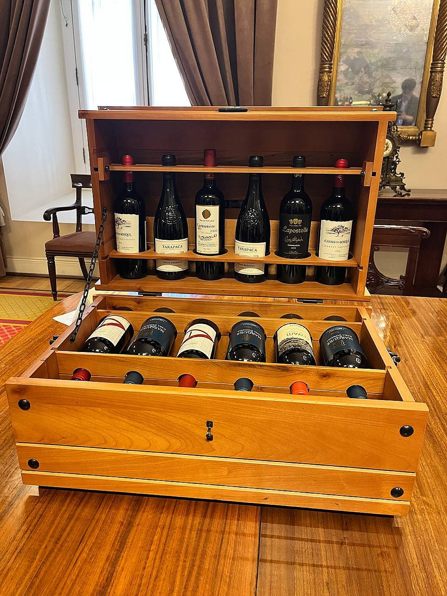
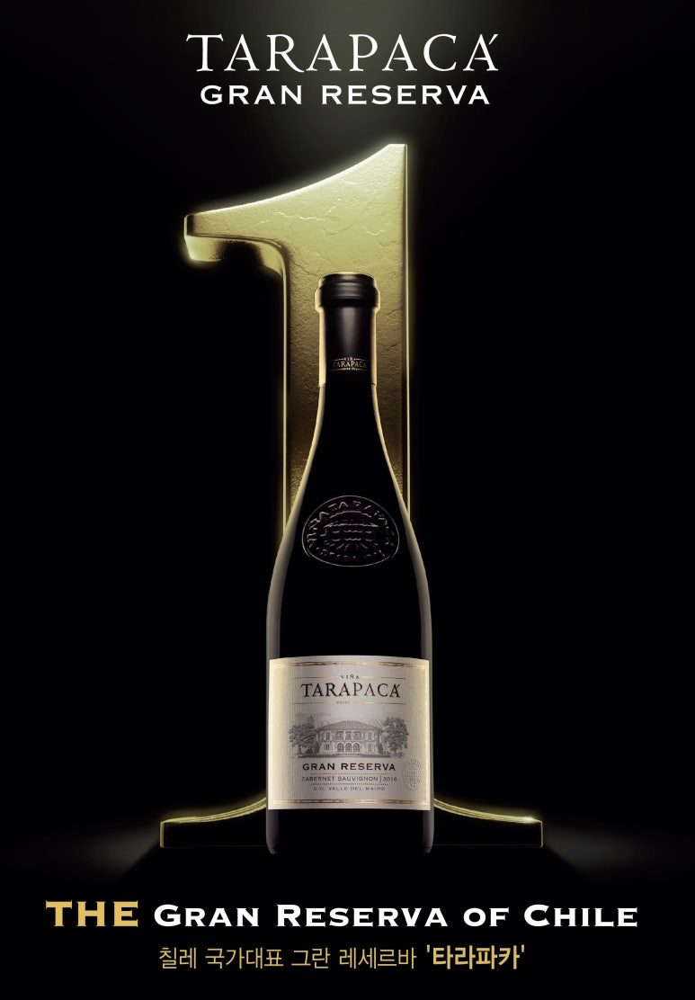
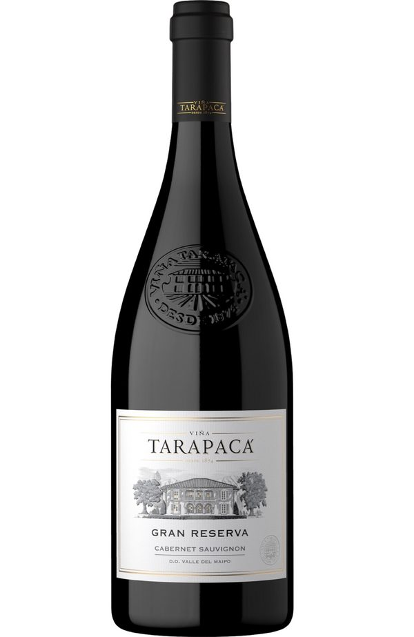

대통령의 선물로 선택된 칠레 와인
타라파카 그란 레세르바 까베르네 소비뇽
타라파카 그랑 리제르바 까베르네 소비뇽 2023은 칠레 마이포 밸리에서 만든 까베르네 소비뇽 레드로, 고기 굽는 날 부담 없이 따면서도 맛은 확실한 와인이에요.
최근 칠레 와인에 관심이 있다면 한 번쯤 들어보셨을 이름이 있습니다.
바로 타라파카(Tarapacá)입니다. 🍷
그런데 최근 타라파카 와인을 다시 한번 주목하게 만드는 소식이 전해졌습니다.
지난 7월 칠레를 공식 방문한 이재명 대통령이 호세 안토니오 카스트 칠레 대통령으로부터 칠레산 특산품과 함께 와인 12병을 선물받았는데요.

이 선물에는 칠레를 대표하는 와이너리들의 와인이 포함됐고, 그중에는 국내에서도 대중적으로 잘 알려진 타라파카(Tarapacá)와 라포스톨(Lapostolle)의 와인도 포함됐습니다.
국가 정상 간 공식 선물에 자국을 대표하는 와인을 담았다는 점에서, 타라파카가 칠레에서 어떤 위치를 차지하고 있는지 보여주는 흥미로운 장면이기도 합니다.
오늘 소개해드릴 와인은 그 타라파카의 대표적인 프리미엄 라인 가운데 하나인
타라파카 그란 레세르바 까베르네 소비뇽입니다.


타라파카(Tarapacá), 칠레를 대표하는 와이너리
타라파카는 칠레 와인을 처음 접하는 분들에게도 비교적 익숙한 이름입니다.
특히 한국에서는 합리적인 가격대의 칠레 와인으로 많이 알려져 있지만, 타라파카의 라인업을 자세히 살펴보면 데일리 와인부터 그란 레세르바까지 상당히 폭넓은 와인을 생산하고 있습니다.
타라파카가 자랑하는 Gran Reserva 라인은 와이너리의 전통과 각 품종의 특징을 표현하는 대표적인 품질 중심 라인으로 소개되고 있습니다.
그중에서도 까베르네 소비뇽은 칠레를 대표하는 품종과 마이포 밸리의 떼루아를 가장 정석적으로 보여주는 와인이라고 할 수 있습니다.
🍇 마이포 밸리에서 만들어지는 까베르네 소비뇽
타라파카 그란 레세르바 까베르네 소비뇽의 산지는 칠레 마이포 밸리(Maipo Valley)입니다.
칠레에서 까베르네 소비뇽을 이야기할 때 빼놓을 수 없는 대표적인 산지죠.
타라파카의 포도밭은 낮에는 충분한 햇빛을 받고, 오후에는 서늘한 바람의 영향을 받습니다.
특히 낮과 밤의 큰 일교차가 포도의 숙성을 천천히 진행시키면서 풍부한 과실 풍미와 균형감 있는 산도를 형성하는 데 도움을 줍니다.
타라파카 측 설명에 따르면 이 지역은 숙성기 낮과 밤의 기온 차이가 최대 약 22℃까지 벌어질 수 있습니다.
이런 환경에서 만들어지는 까베르네 소비뇽은 충분히 익은 과실의 풍미를 가지면서도 지나치게 무겁거나 둔하지 않은 것이 특징입니다.

🍷 타라파카 그란 레세르바 까베르네 소비뇽의 매력
잔에 따르면 먼저 자두, 블랙베리, 카시스 같은 검은 과실의 풍성한 향이 느껴집니다.
여기에 은은한 월계수잎 계열의 허브 뉘앙스가 더해지고, 오크 숙성에서 오는 정향, 블랙페퍼, 바닐라의 향이 이어집니다.
타라파카 그란 레세르바 까베르네 소비뇽은 프렌치 오크와 아메리칸 오크에서 12개월 숙성됩니다.
그래서 단순히 과일 향만 강한 칠레 레드가 아니라 오크에서 오는 스파이스와 바닐라, 그리고 숙성에서 만들어지는 복합적인 풍미까지 함께 즐길 수 있습니다.
입안에서는 적당한 구조감과 함께 부드럽고 둥근 탄닌이 느껴집니다.
무겁고 거친 스타일의 까베르네 소비뇽이라기보다는 풍성한 과실 + 적당한 오크 + 부드러운 탄닌이 균형을 이루는 스타일에 가깝습니다.
⭐ 실제로 어느 정도의 평가를 받고 있을까?
타라파카 그란 레세르바 까베르네 소비뇽은 단순히 '유명한 칠레 와인'이라는 이유만으로 소개할 만한 와인은 아닙니다.
실제로 여러 와인 전문 매체와 평론가들에게 꾸준히 좋은 평가를 받고 있습니다.
최근 빈티지 기준으로 타라파카 공식 자료에는
James Suckling 92점
Tim Atkin 92점
Descorchados 94점
International Wine & Spirit Competition 95점
Vinous 92점
등의 평가가 소개되어 있습니다.
물론 와인의 점수만으로 맛을 판단할 수는 없지만, 가격 대비 품질을 이야기할 때 참고할 만한 지표인 것은 분명합니다.
'대통령 선물'이라는 점이 더욱 흥미로운 이유
이번 한-칠레 정상 간 선물 교환에서 칠레 측은 이재명 대통령 부부에게 와인 12병을 비롯해 알파카 담요, 커피 드립 세트, 청금석 보석함 등 칠레를 대표하는 특산품을 선물했습니다.
특히 와인 12병은 타라파카와 라포스톨 등 칠레를 대표하는 와이너리 제품들로 구성됐다고 전해졌습니다.
여기서 타라파카라는 이름을 다시 볼 필요가 있습니다.
평소에는 마트나 와인숍에서 비교적 친숙하게 만날 수 있는 브랜드지만, 칠레 입장에서는 자국을 대표하는 와인 브랜드 중 하나로 국가 정상에게 선물할 수 있는 와인이라는 것입니다.
그래서 타라파카를 단순히 '가성비 좋은 칠레 와인'이라고만 생각하셨다면, 이번 기회에 그란 레세르바 라인을 한번 경험해보시는 것도 좋습니다.
특히 타라파카 그란 레세르바 까베르네 소비뇽은 칠레 와인의 장점인 풍부한 검은 과실 풍미와 부드러운 탄닌, 그리고 오크 숙성에서 오는 깊이를 비교적 편안하게 즐길 수 있는 와인입니다.
🥩 이런 분께 추천합니다
✔ 칠레 까베르네 소비뇽을 좋아하시는 분
✔ 너무 무겁고 떫은 레드와인은 부담스러운 분
✔ 검은 과실과 바닐라, 스파이스 풍미를 좋아하는 분
✔ 스테이크와 잘 어울리는 레드와인을 찾는 분
✔ 거래처나 비즈니스 선물용 와인을 찾는 분
✔ 유명하면서도 가격 대비 품질이 좋은 와인을 찾는 분
✔ 대통령 공식 선물에 포함될 만큼 검증된 칠레 와인을 경험해보고 싶은 분
🍽️ 타라파카 그란 레세르바 까베르네 소비뇽 음식 추천
까베르네 소비뇽답게 가장 먼저 떠오르는 음식은 역시 소고기입니다.
스테이크, 숯불구이, 한우 등 풍미가 진한 육류와 특히 잘 어울립니다.
그 외에도 숙성 치즈나 버섯을 활용한 요리와도 좋은 궁합을 보여줍니다.
타라파카에서도 이 와인을 레드미트, 치즈, 버섯 리조또 등과 함께 즐기는 것을 추천하고 있습니다.
개인적으로는 고기를 구운 뒤 소금과 후추 정도로 간단하게 즐기면서 와인의 검은 과실과 스파이스 풍미를 비교해보는 것을 추천드립니다.
🍷 대통령의 선물로 다시 주목받는 타라파카
칠레 와인은 우리나라에서 오랫동안 '합리적인 가격에 좋은 품질'을 대표하는 와인으로 사랑받아왔습니다.
그중에서도 타라파카는 한국 소비자들에게 익숙한 브랜드이면서 동시에 칠레를 대표하는 와이너리 가운데 하나입니다.
이번 한-칠레 정상회담에서 칠레 측이 준비한 공식 선물에 타라파카가 포함됐다는 사실은 이런 타라파카의 위상을 다시 한번 보여주는 사례가 아닐까 싶습니다.
대통령에게 선물할 수 있는 와인이라고 해서 반드시 비싸야 하는 것은 아닙니다.
중요한 것은 그 나라를 대표할 수 있는 품질과 상징성, 그리고 누구에게 선물해도 부족하지 않은 완성도겠죠.
그런 의미에서 타라파카 그란 레세르바 까베르네 소비뇽은 칠레 와인의 매력을 부담스럽지 않게 경험하면서도, 선물용으로도 충분히 품격을 갖춘 와인을 찾는 분들에게 좋은 선택지가 될 수 있습니다.
이번 기회에 '익숙해서 지나쳤던 칠레 와인'을 다시 한번 제대로 만나보세요. 🍷
이 글은 땡큐와인 네이버 블로그에 먼저 올린 글이에요.